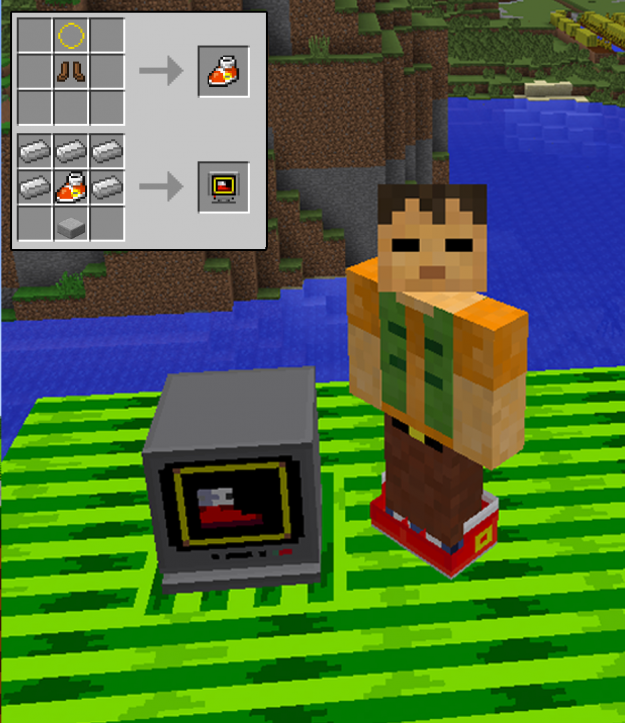

How to Install Minecraft Mods
By: Dan
Introduction
Minecraft is one of the most popular video games in the world, with millions of players worldwide. One of the most appealing features of Minecraft is the ability to modify the game by using Minecraft mods. These mods allow you to customize the game to your liking, adding new items, game mechanics, and even entire new dimensions. However, not everyone knows how to install Minecraft mods, which can be a bit tricky if you're new to the game. In this guide, we'll show you everything you need to know about installing Minecraft mods and provide you with some tips on finding and selecting the best mods for your game.
Previous subheadings:
- Understanding Minecraft Mods
- Finding Mods for Minecraft
- Installing Minecraft Forge
- Installing Minecraft Mods
- Troubleshooting Common Problems
Minecraft mods are one of the easiest ways to add new content to your game and keep it fresh and exciting. Whether you're looking to tweak minor game mechanics or add new game-changing features, mods offer endless possibilities. However, before you dive into the world of modding, it's essential to understand what mods are and how they work.
Mods are third-party additions to Minecraft created by a community of developers and enthusiasts. They can add new content to the game, change how it functions, or improve its performance. Some mods add new items or creatures to the game, while others improve the game's graphics, sound, or user interface. Mods can be found on a variety of websites and modding communities, and they come in all shapes and sizes.
To install mods, you first need to install Minecraft Forge, which is a modding platform for Minecraft that makes it easy to install mods on your system. Minecraft Forge acts as a bridge between the game and the mods, allowing you to install and run the mods seamlessly.
Once you have Minecraft Forge installed, you can start browsing for mods that you want to install. Be sure to read through the mod descriptions and check their compatibility with your Minecraft version before installing them. Installing mods can be as easy as dragging and dropping the mod files into the Minecraft mods folder or using a mod installer program.
In conclusion, installing Minecraft mods can seem daunting at first, but with the right tools and knowledge, it can be an enjoyable and rewarding experience. With thousands of mods to choose from, you're sure to find something that enhances your Minecraft experience in ways you never thought possible.
ad space
Step 1: Install Minecraft Forge
How to Install Minecraft Mods: Step 1 - Installing Minecraft Forge
When it comes to Minecraft mods, one of the first things you’ll need to learn is how to install Minecraft Forge. This modding tool is essential for getting other mods running on your game. In this guide, we’ll show you a step-by-step process on how to install Minecraft Forge.
First, make sure you have a copy of Minecraft installed on your computer. Once you’ve done that, go to the official Minecraft Forge website and select the version of Forge that’s compatible with your current version of Minecraft. After selecting the download button, you’ll be redirected to an Adfly page. This page will have a waiting period before you can access the download link. During this time, it’s important to avoid clicking on any banner ads or links that seem suspicious.
Once you’ve downloaded Minecraft Forge, double click on the installer to start the installation process. You’ll be asked to select a destination folder for Minecraft and specify the installation type. If you’re unsure of what these options mean, we recommend selecting “Install client” and keeping the default installation directory. From there, hit “OK” and the installation process will begin.
After the installation is complete, you can launch Minecraft and select the “Forge” profile from the available options. This will load Minecraft with Forge installed and ready to go. It’s now time to explore the world of Minecraft mods!
Installing Minecraft Forge is the first step to modding your Minecraft game. There are numerous mods available on the internet that can enhance your gameplay experience in various ways. By following this simple guide, you’ll be well on your way to installing all sorts of mods and taking your Minecraft game to new heights.
ad space
Step 2: Download Mods
In the world of Minecraft, mods are the ultimate way to personalize and spice up your gameplay experience. From adding new weapons and creatures to completely transforming your world, mods are an essential aspect of Minecraft's community-driven culture. However, figuring out how to install these mods can be overwhelmingly complicated. That’s where we come in. Our comprehensive guide on How to Install Minecraft Mods gives step-by-step instructions on everything you need to know. This subheading focuses on the second and arguably most important step in installing a mod: downloading it.
Once you have found a mod you want to install, the first thing you need to do is download it. This is a critical step in the mod installation process as downloading from the wrong source or downloading the wrong version of a mod can result in issues when trying to install it. There are plenty of safe and reliable sources available online, but it’s important to do your research and make sure you’re downloading from a reputable website. Once you’ve found a trustworthy source, click on the link to download the mod, making sure to save it in a place that you can easily locate later.
It’s important to note that Minecraft mods come in two types of files: .zip and .jar. The type of file you download will depend on the specific mod you’re installing. If the mod is a zip file, you’ll need to unzip the file by right-clicking on it and selecting “Extract All.” If the mod is a jar file, it can be run without unzipping the file. Once you’ve downloaded and located the mod file, you can move on to the next step in our guide.
Now that you understand the crucial step of downloading mods, you're one step closer to being able to create the ultimate Minecraft experience. Make sure to stay tuned for the next steps in our guide on How to Install Minecraft Mods.
ad space
Step 3: Install Mods
Congratulations! You've successfully navigated through the first two steps of installing mods in Minecraft. Now, it's time to delve deeper and tackle the exciting task of actually installing mods.
But where do you start? With thousands of mods available and an endless variety of customization options, the world of Minecraft modding might seem overwhelming at first. Fear not! We've got you covered with this comprehensive guide to installing mods.
Before you begin, it's important to note that installing mods can be risky and might harm your game. That's why we recommend creating a backup of your Minecraft world before you start. While it might seem like an extra step, it's worth the effort for the peace of mind it provides.
Once you've got your backup sorted, it's time to move on to the actual installation process. This step involves downloading the mods and adding them to Minecraft's file system. It might sound complicated, but fortunately, it's relatively straightforward if you follow our step-by-step instructions.
Our guide covers everything you need to know, including identifying the correct Minecraft version for your mods, finding safe and reputable sources for them, and troubleshooting common issues. You'll also learn useful tips and tricks for managing your mods, including how to organize them and avoid conflicts between different mods.
Ready to take your Minecraft experience to the next level? Follow our guide to installing mods, and you'll be up and running in no time. From unique gameplay mechanics and new items to redesigned graphics and improved performance, the possibilities are endless with mods. Don't miss out on the fun- start installing today!
ad space
Step 4: Launch Minecraft and Enjoy!
Congratulations! You've successfully reached the final and most exciting step of the Minecraft mod installation process - launching the game and immersing yourself in an entirely new world of possibilities.
Now that you've followed the first three steps of downloading Minecraft, installing the right version of Minecraft Forge, and selecting and downloading your desired mods, it's time to put all that effort to use.
But before you launch Minecraft, make sure you double-check that everything is in order. Ensure that you've downloaded the correct version of Minecraft Forge that is compatible with your Minecraft version and that you've placed your mod files in the correct mods folder.
Once you've confirmed everything is in order, it's time to launch Minecraft. You'll see a new Forge profile created when you installed Minecraft Forge; select this profile in the Minecraft launcher and click on the Play button to start the game.
As the game launches, you'll notice the Minecraft Forge logo appear in the bottom left corner of the screen, indicating that it has successfully loaded.
After the game finishes loading, you'll be able to enjoy all that your newly installed mods have to offer. From new weapons and armor to exciting new missions and enemies, the possibilities are endless.
We recommend that you take some time to explore and familiarize yourself with each mod you've installed. Whether you're a seasoned Minecraft veteran or just starting, mods can add a whole new level of excitement and immersion to your gameplay experience.
So launch Minecraft, explore your new mods, and get crafting! Your adventure is waiting, and now that you know how to install Minecraft mods, the sky's the limit.
ad space
Conclusion
In the world of Minecraft, the possibilities are endless. From building intricate structures to embarking on epic adventures with friends, this game truly has it all. However, what makes Minecraft even better is the ability to install mods. Mods are like add-ons that allow you to customize your Minecraft experience and add new features to the game. In this guide, we've explored the step-by-step process of installing Minecraft mods to enhance your gaming experience. But now that you've successfully installed a mod, what's next?
The conclusion of installing Minecraft mods is that the possibilities now become even greater. With the addition of mods, you can tweak game mechanics, add new creatures, or even completely change the game's aesthetic. If you're into roleplaying, you can try mods designed to make your Minecraft world more realistic, with temperature effects and new farming mechanics. There are mods that add magic and spells, allowing you to become a powerful wizard or witch. With the addition of mods, the possibilities really are endless.
It's important to remember that not all mods are created equal. While some mods are perfectly safe and can be easily installed, others may corrupt your game or even harm your computer. That's why it's important to do your research and carefully choose the mods you want to install. Make sure to download mods only from reputable sources and always read the reviews and comments from other players.
In conclusion, installing Minecraft mods can take your Minecraft experience to the next level. Using mods, you can create a customized Minecraft world tailored to your own unique interests and playstyle. However, it's important to approach modding with caution and carefully choose the mods you install to ensure you're not damaging your game or your computer. With these tips and tricks, you're now ready to dive into the world of Minecraft modding and take your gaming experience to new heights.
ad space